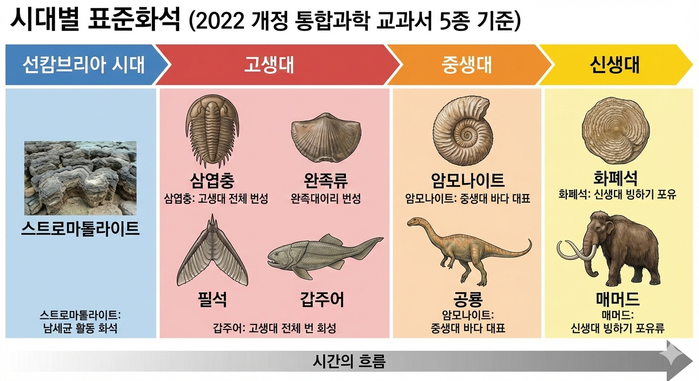

01. 지질 시대

- 화석의 종류
표준 화석
생존 기간 짧음
분포 면적 넓음
→ 시대를 알려줌
시상 화석
생존 기간 김
분포 면적 좁음
→ 환경을 알려줌
- 예시: 고사리(따뜻/습한 육지), 산호(따뜻/얕은 바다).

Self Check
Q. 공룡 화석처럼 특정한 시대를 대표하는 화석은?
표준 화석
02. 선캄브리아 시대 (46억년 전~)
- 기간: 지질 시대의 대부분(약 88%)을 차지.
- 화석 희귀:
개체 수 적음 + 단단한 껍질 없음 + 잦은 지각 변동. - 대표 화석:
- 스트로마톨라이트: 남세균(광합성 → 산소 공급).
- 에디아카라 동물군: 말랑한 다세포 생물.
Self Check
Q. 원시 지구 대기에 산소를 공급한 생물의 흔적은?
스트로마톨라이트
03. 고생대 (5.4억년 전~)
- 환경:
중기 이후 오존층(O3_) 형성 → 육상 생물 출현.
말기에 초대륙 판게아 형성 → 대멸종 - 생물:
- 동물: 삼엽충, 방추충(푸줄리나), 어류, 양서류, 곤충
- 식물: 거대한 양치식물(고사리) 번성 → 석탄층 형성.
Self Check
Q. 육상 생물의 출현을 가능하게 한 대기 변화는?
오존층의 형성
04. 중생대 (2.5억년 전~)
- 환경:
판게아 분리 시작. 온난한 기후 (빙하기 없음).
중생대 말 급격한 지구 환경 변화 → 대멸종 - 생물 (파충류 시대):
- 동물: 공룡, 암모나이트, 시조새.
- 식물: 겉씨식물(소나무, 은행나무) 번성.
Self Check
Q. 중생대 바다를 대표하는 나선형 껍질의 생물은?
암모나이트
05. 신생대 (6600만년 전~)
- 환경:
현재와 비슷한 수륙 분포. 알프스/히말라야 산맥 형성.
후기에 빙하기와 간빙기 반복. - 생물 (포유류 시대):
- 동물: 매머드, 화폐석, 인류 조상.
- 식물: 속씨식물(꽃 피는 식물) 번성.

Self Check
Q. 신생대를 대표하는 거대 포유류와 바다 생물은?
매머드, 화폐석
06. 대멸종 (Mass Extinction)
- 주요 대멸종 (5회):
가장 큰 규모: 고생대 말 (판게아 형성).
공룡 멸종: 중생대 말 (운석 충돌, 화산). - 의의:
멸종 후 살아남은 생물이 빈 공간을 채우며 진화 → 결과적으로 생물 다양성 증가.

Self Check
Q. 역사상 가장 규모가 컸던 대멸종 시기는?
고생대 말 (3차 대멸종)